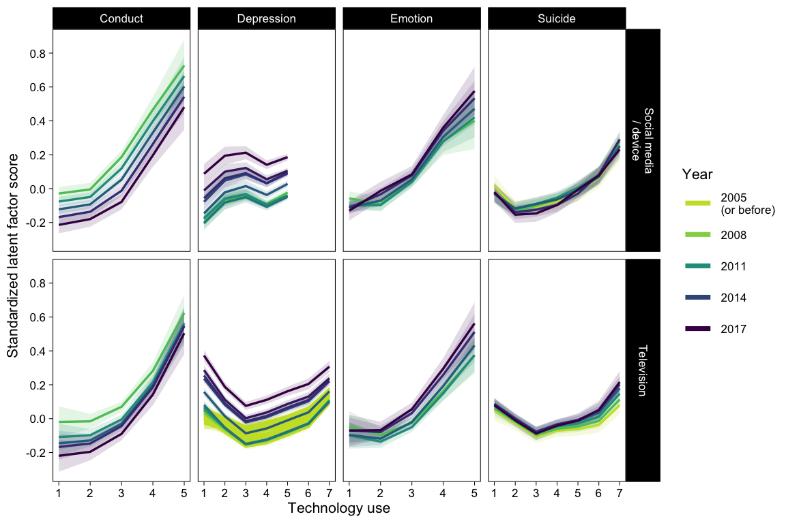
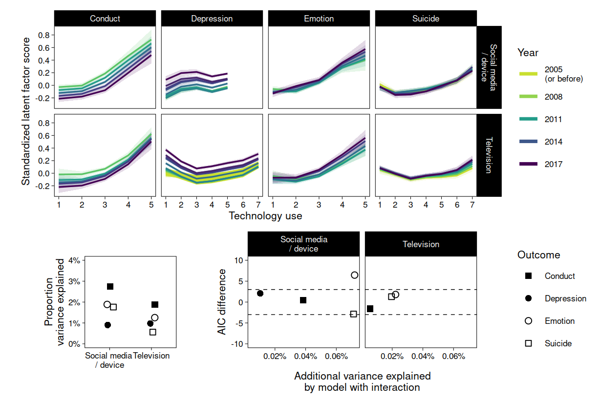

Chapter 9 GAM
9.1 Data
mtf <- read_rds("data/mtf.rds")
us <- read_rds("data/us.rds")
yrbs <- read_rds("data/yrbs.rds")
us <- mutate(us, across(sdqc:sdqv, ordered))
yrbs <- mutate(yrbs, across(sad_lonely:suicide_3, ordered))
# Drop rows where all outcome items are missing
# And remove mean outcome (will use latent factors)
mtf <- drop_na(mtf, Depression) %>% select(-Depression)
us <- drop_na(us, Emotion, Conduct) %>% select(-Emotion, -Conduct)
yrbs <- drop_na(yrbs, Suicide) %>% select(-Suicide)9.2 Models
Roadmap:
- For each outcome in each dataset, a multiple indicator latent variable is created with lavaan
- Those latent variables are extracted back to the main data frames
- Latent variables are treated as outcomes in GAMs
- GAMs treat predictors with smooths to allow wiggliness
- Two models are compared: one with smooth X and year, one with smooth X, year, and smooth X by year interaction
- Present all model comparisons and R squareds
9.3 Create latent variables for outcomes
fit_sem <- function(data, items, y, missing = "ml") {
# Combine names of items to a string for lavaan model
items_all <- paste0(items, collapse = " + ")
# Model strings
sem0 <- str_glue("{y} =~ {items_all}")
ml0 <- sem(sem0, data = data, missing = missing)
return(bind_cols(data, as.data.frame(predict(ml0))))
}mtf_mod <- '
Depression =~ D_B_1 + D_B_2 + D_B_3 + D_B_4 + D_B_5 + D_B_6
'
out <- cfa(mtf_mod, data = mtf, missing = "ml", std.lv = TRUE)
mtf <- bind_cols(mtf, as.data.frame(predict(out)))
mtf$Depression <- as.numeric(scale(mtf$Depression))us_mod <- '
Conduct =~ sdqe + sdqg + sdql + sdqr + sdqv
Emotion =~ sdqc + sdqh + sdqm + sdqp + sdqx
'
out <- cfa(us_mod, data = us, missing = "pairwise", std.lv = TRUE)
us <- bind_cols(us, as.data.frame(predict(out)))
us$Conduct <- as.numeric(scale(us$Conduct))
us$Emotion <- as.numeric(scale(us$Emotion))yrbs_mod <- '
Suicide =~ sad_lonely + suicide_1 + suicide_2 + suicide_3
'
out <- cfa(yrbs_mod, data = yrbs, missing = "pairwise", std.lv = TRUE)
yrbs <- bind_cols(yrbs, as.data.frame(predict(out)))
yrbs$Suicide <- as.numeric(scale(yrbs$Suicide))9.4 Estimate GAMs
fit <- function(data, x, y, name) {
# Center year
data <- mutate(data, Year = Year - 2017)
# Drop rows with missing predictor
data <- drop_na(data, all_of(x))
# Ensure max knots
k_x <- length(table(data[[x]]))
k_yr <- length(table(data[["Year"]]))
# Model strings
model0 <- str_glue("{y} ~ ti(Year, k = {k_yr})")
model1 <- str_glue("{y} ~ ti(Year, k = {k_yr}) + ti({x}, k = {k_x})")
model2 <- str_glue(
"{y} ~ ti(Year, k = {k_yr}) + ti({x}, k = {k_x}) + ti({x}, Year, k = c({k_x}, {k_yr}))"
)
fit0 <- gam(as.formula(model0), data = data, method = "REML")
fit1 <- gam(as.formula(model1), data = data, method = "REML")
fit2 <- gam(as.formula(model2), data = data, method = "REML")
return(
tibble(
name, x, y,
fit0 = list(fit0), fit1 = list(fit1), fit2 = list(fit2)
)
)
}if (!file.exists("models/gams.rds")) {
x1 <- fit(mtf, "SM", "Depression", "MTF")
x2 <- fit(mtf, "TV", "Depression", "MTF")
x3 <- fit(us, "SM", "Conduct", "US")
x4 <- fit(us, "TV", "Conduct", "US")
x5 <- fit(us, "SM", "Emotion", "US")
x6 <- fit(us, "TV", "Emotion", "US")
x7 <- fit(yrbs, "DV", "Suicide", "YRBS")
x8 <- fit(yrbs, "TV", "Suicide", "YRBS")
# Rename variables
fits <- bind_rows(x1,x2,x3,x4,x5,x6,x7,x8)
fits <- fits %>%
rename(Technology = x, Outcome = y, Study = name) %>%
mutate(
Technology = ifelse(
Technology %in% c("SM", "DV"),
"Social media / device",
"Television"
)
)
saveRDS(fits, "models/gams.rds")
} else {fits <- readRDS("models/gams.rds")}out <- fits %>%
pivot_longer(fit0:fit2) %>%
mutate(
rsq = map_dbl(value, ~summary(.)$r.sq),
dev = map_dbl(value, ~summary(.)$dev.expl),
aic = map_dbl(value, AIC)
) %>%
select(-value) %>%
pivot_wider(values_from = rsq:aic)
kable(out, digits = 2)| Study | Technology | Outcome | rsq_fit0 | rsq_fit1 | rsq_fit2 | dev_fit0 | dev_fit1 | dev_fit2 | aic_fit0 | aic_fit1 | aic_fit2 |
|---|---|---|---|---|---|---|---|---|---|---|---|
| MTF | Social media / device | Depression | 0.01 | 0.01 | 0.01 | 0.01 | 0.01 | 0.01 | 347916.95 | 347694.60 | 347692.53 |
| MTF | Television | Depression | 0.00 | 0.01 | 0.01 | 0.00 | 0.01 | 0.01 | 1038065.36 | 1035800.03 | 1035710.03 |
| US | Social media / device | Conduct | 0.00 | 0.03 | 0.03 | 0.00 | 0.03 | 0.03 | 53280.58 | 52826.26 | 52825.78 |
| US | Television | Conduct | 0.00 | 0.02 | 0.02 | 0.00 | 0.02 | 0.02 | 54062.73 | 53781.76 | 53783.35 |
| US | Social media / device | Emotion | 0.00 | 0.02 | 0.02 | 0.00 | 0.02 | 0.02 | 53374.18 | 53045.29 | 53038.83 |
| US | Television | Emotion | 0.00 | 0.01 | 0.01 | 0.00 | 0.01 | 0.01 | 54123.54 | 53912.85 | 53911.05 |
| YRBS | Social media / device | Suicide | 0.00 | 0.02 | 0.02 | 0.00 | 0.02 | 0.02 | 83550.64 | 83051.90 | 83054.78 |
| YRBS | Television | Suicide | 0.00 | 0.01 | 0.01 | 0.00 | 0.01 | 0.01 | 83510.82 | 83369.27 | 83367.99 |
Figure of fitted X - Y lines per year
fitsfoo <- function(row) {
fit <- fits$fit2[[row]]
newx <- distinct(fit[["model"]][,2:3])
preds <- cbind(newx, predict(fit, newdata = newx, se.fit = TRUE)) %>%
as_tibble()
names(preds)[2] <- "x"
preds$Year <- preds$Year + 2017
return(preds)
}
bar <- function(row) {
fit <- fits$fit2[[row]]
newx <- as_tibble(fit[["model"]])
names(newx) <- c("y", "Year", "x")
newx$Year <- newx$Year + 2017
return(newx)
}
fits$outs <- map(1:8, foo)
fits$dats <- map(1:8, bar)
p01 <- fits %>%
select(-c(fit0:fit2, dats)) %>%
unnest(outs) %>%
# mutate(Year2 = Year, Year = factor(ifelse(Year < 2005, "< 2005", Year))) %>%
ggplot(aes(x, fit, col = Year, group = Year, fill = Year)) +
scale_colour_viridis_c(
aesthetics = c("color", "fill"),
direction = -1, end = .95, values = c(.6, 1), na.value = "#C9DF2F",
guide = "legend",
breaks = c(2005, 2008, 2011, 2014, 2017),
labels = c("2005\n(or before)", 2008, 2011, 2014, 2017)
) +
scale_y_continuous(breaks = pretty_breaks()) +
scale_x_continuous(breaks = pretty_breaks()) +
# Can add points but this renders trends invisibly small
# geom_point(
# data = unnest(select(fits, -c(fit0:fit2, outs)), dats),
# aes(x=x, y=y), size = .1, alpha = .075,
# position = position_jitter(.25, 0, seed = 1)
# ) +
geom_ribbon(
aes(ymin = fit-se.fit*2, ymax = fit+se.fit*2),
alpha = .15, col = NA, show.legend = FALSE
) +
geom_line(size = .6) +
guides(
color = guide_legend(
override.aes = list(size = 1.25)
)
) +
labs(x = "Technology use", y = "Standardized latent factor score") +
facet_grid(
Technology~Outcome, scales = "free_x", labeller = label_wrap_gen(13)
)
p01
p1 <- out %>%
ggplot(aes(Technology, dev_fit1, shape = Outcome)) +
scale_y_continuous(
"Proportion\nvariance explained",
limits = c(0, .04),
labels = function(x) percent(x, 1)
) +
scale_x_discrete(labels = function(x) str_replace(x, "/", "\n/")) +
geom_point(position = position_jitter(.1, seed = 1), size = 2) +
scale_shape_manual(values = c(15, 16, 21, 22)) +
theme(
legend.position = "none",
aspect.ratio = 1,
axis.title.x = element_blank()
)
p2 <- out %>%
ggplot(aes(dev_fit2-dev_fit1, aic_fit1-aic_fit2, shape = Outcome)) +
geom_hline(yintercept = c(-3, 3), lty = 2, size = .25) +
scale_shape_manual(values = c(15, 16, 21, 22)) +
geom_point(size = 2) +
labs(y = "AIC difference") +
coord_cartesian(ylim = c(-10, 10)) +
scale_x_continuous(
"Additional variance explained\nby model with interaction",
labels = function(x) percent(x, .01)
) +
facet_wrap("Technology", labeller = label_wrap_gen(13)) +
theme()
p01 / ((p1 | p2) + plot_layout(widths = c(4, 6))) + plot_layout(heights = c(65, 35))
filter(out, Study=="MTF") %>%
mutate(delta_aic = aic_fit1-aic_fit2, delta_dev = percent(dev_fit2-dev_fit1)) %>%
select(Study:Outcome, starts_with("delta")) 9.5 Session information
options(width = 120)
library(sessioninfo)
session_info()## ─ Session info ───────────────────────────────────────────────────────────────────────────────────────────────────────
## setting value
## version R version 4.0.3 (2020-10-10)
## os macOS Big Sur 10.16
## system x86_64, darwin17.0
## ui X11
## language (EN)
## collate en_GB.UTF-8
## ctype en_GB.UTF-8
## tz Europe/London
## date 2021-03-01
##
## ─ Packages ───────────────────────────────────────────────────────────────────────────────────────────────────────────
## package * version date lib source
## abind 1.4-5 2016-07-21 [1] CRAN (R 4.0.0)
## assertthat 0.2.1 2019-03-21 [1] CRAN (R 4.0.0)
## backports 1.2.1 2020-12-09 [1] CRAN (R 4.0.2)
## base64enc 0.1-3 2015-07-28 [1] CRAN (R 4.0.0)
## bayesplot 1.8.0 2021-01-10 [1] CRAN (R 4.0.2)
## bookdown 0.21.6 2021-03-01 [1] Github (rstudio/bookdown@ca0145f)
## boot 1.3-27 2021-02-12 [1] CRAN (R 4.0.2)
## bridgesampling 1.0-0 2020-02-26 [1] CRAN (R 4.0.0)
## brms * 2.14.4 2020-11-03 [1] CRAN (R 4.0.2)
## Brobdingnag 1.2-6 2018-08-13 [1] CRAN (R 4.0.0)
## broom 0.7.5.9000 2021-03-01 [1] Github (tidymodels/broom@0b3528b)
## bslib 0.2.4 2021-01-25 [1] CRAN (R 4.0.3)
## callr 3.5.1 2020-10-13 [1] CRAN (R 4.0.2)
## cellranger 1.1.0 2016-07-27 [1] CRAN (R 4.0.0)
## cli 2.3.1 2021-02-23 [1] CRAN (R 4.0.3)
## coda 0.19-4 2020-09-30 [1] CRAN (R 4.0.2)
## codetools 0.2-18 2020-11-04 [1] CRAN (R 4.0.2)
## colorspace 2.0-0 2020-11-11 [1] CRAN (R 4.0.2)
## colourpicker 1.1.0 2020-09-14 [1] CRAN (R 4.0.2)
## crayon 1.4.1 2021-02-08 [1] CRAN (R 4.0.3)
## crosstalk 1.1.1 2021-01-12 [1] CRAN (R 4.0.2)
## curl 4.3 2019-12-02 [1] CRAN (R 4.0.0)
## DBI 1.1.1 2021-01-15 [1] CRAN (R 4.0.2)
## dbplyr 2.1.0 2021-02-03 [1] CRAN (R 4.0.2)
## digest 0.6.27 2020-10-24 [1] CRAN (R 4.0.2)
## dplyr * 1.0.4 2021-02-02 [1] CRAN (R 4.0.2)
## DT 0.17 2021-01-06 [1] CRAN (R 4.0.2)
## dygraphs 1.1.1.6 2018-07-11 [1] CRAN (R 4.0.0)
## ellipsis 0.3.1 2020-05-15 [1] CRAN (R 4.0.0)
## emmeans 1.5.4 2021-02-03 [1] CRAN (R 4.0.2)
## estimability 1.3 2018-02-11 [1] CRAN (R 4.0.0)
## evaluate 0.14 2019-05-28 [1] CRAN (R 4.0.0)
## fansi 0.4.2 2021-01-15 [1] CRAN (R 4.0.2)
## farver 2.0.3 2020-01-16 [1] CRAN (R 4.0.0)
## fastmap 1.1.0 2021-01-25 [1] CRAN (R 4.0.3)
## forcats * 0.5.1 2021-01-27 [1] CRAN (R 4.0.2)
## fs 1.5.0 2020-07-31 [1] CRAN (R 4.0.2)
## future * 1.21.0 2020-12-10 [1] CRAN (R 4.0.2)
## gamm4 0.2-6 2020-04-03 [1] CRAN (R 4.0.2)
## generics 0.1.0 2020-10-31 [1] CRAN (R 4.0.2)
## ggplot2 * 3.3.3 2020-12-30 [1] CRAN (R 4.0.2)
## ggridges 0.5.3 2021-01-08 [1] CRAN (R 4.0.2)
## ggstance * 0.3.5 2020-12-17 [1] CRAN (R 4.0.2)
## globals 0.14.0 2020-11-22 [1] CRAN (R 4.0.2)
## glue 1.4.2 2020-08-27 [1] CRAN (R 4.0.2)
## gridExtra 2.3 2017-09-09 [1] CRAN (R 4.0.0)
## gtable 0.3.0 2019-03-25 [1] CRAN (R 4.0.0)
## gtools 3.8.2 2020-03-31 [1] CRAN (R 4.0.0)
## haven 2.3.1 2020-06-01 [1] CRAN (R 4.0.0)
## highr 0.8 2019-03-20 [1] CRAN (R 4.0.0)
## hms 1.0.0 2021-01-13 [1] CRAN (R 4.0.2)
## htmltools 0.5.1.1 2021-01-22 [1] CRAN (R 4.0.2)
## htmlwidgets 1.5.3 2020-12-10 [1] CRAN (R 4.0.2)
## httpuv 1.5.5 2021-01-13 [1] CRAN (R 4.0.2)
## httr 1.4.2 2020-07-20 [1] CRAN (R 4.0.2)
## igraph 1.2.6 2020-10-06 [1] CRAN (R 4.0.2)
## inline 0.3.17 2020-12-01 [1] CRAN (R 4.0.2)
## jquerylib 0.1.3 2020-12-17 [1] CRAN (R 4.0.2)
## jsonlite 1.7.2 2020-12-09 [1] CRAN (R 4.0.2)
## knitr * 1.31 2021-01-27 [1] CRAN (R 4.0.2)
## labeling 0.4.2 2020-10-20 [1] CRAN (R 4.0.2)
## later 1.1.0.1 2020-06-05 [1] CRAN (R 4.0.0)
## lattice 0.20-41 2020-04-02 [1] CRAN (R 4.0.3)
## lavaan * 0.6-7 2020-07-31 [1] CRAN (R 4.0.2)
## lifecycle 1.0.0 2021-02-15 [1] CRAN (R 4.0.2)
## listenv 0.8.0 2019-12-05 [1] CRAN (R 4.0.0)
## lme4 1.1-26 2020-12-01 [1] CRAN (R 4.0.2)
## loo 2.4.1 2020-12-09 [1] CRAN (R 4.0.2)
## lubridate 1.7.9.2 2020-11-13 [1] CRAN (R 4.0.2)
## magrittr 2.0.1 2020-11-17 [1] CRAN (R 4.0.2)
## markdown 1.1 2019-08-07 [1] CRAN (R 4.0.0)
## MASS 7.3-53.1 2021-02-12 [1] CRAN (R 4.0.2)
## Matrix 1.3-2 2021-01-06 [1] CRAN (R 4.0.2)
## matrixStats 0.58.0 2021-01-29 [1] CRAN (R 4.0.2)
## mgcv * 1.8-34 2021-02-16 [1] CRAN (R 4.0.2)
## mime 0.10 2021-02-13 [1] CRAN (R 4.0.2)
## miniUI 0.1.1.1 2018-05-18 [1] CRAN (R 4.0.0)
## minqa 1.2.4 2014-10-09 [1] CRAN (R 4.0.0)
## mnormt 2.0.2 2020-09-01 [1] CRAN (R 4.0.2)
## modelr 0.1.8 2020-05-19 [1] CRAN (R 4.0.0)
## multcomp 1.4-16 2021-02-08 [1] CRAN (R 4.0.2)
## munsell 0.5.0 2018-06-12 [1] CRAN (R 4.0.0)
## mvtnorm 1.1-1 2020-06-09 [1] CRAN (R 4.0.0)
## nlme * 3.1-152 2021-02-04 [1] CRAN (R 4.0.2)
## nloptr 1.2.2.2 2020-07-02 [1] CRAN (R 4.0.2)
## pacman 0.5.1 2019-03-11 [1] CRAN (R 4.0.0)
## parallelly 1.23.0 2021-01-04 [1] CRAN (R 4.0.2)
## patchwork * 1.1.1 2020-12-17 [1] CRAN (R 4.0.2)
## pbivnorm 0.6.0 2015-01-23 [1] CRAN (R 4.0.0)
## pillar 1.5.0 2021-02-22 [1] CRAN (R 4.0.3)
## pkgbuild 1.2.0 2020-12-15 [1] CRAN (R 4.0.2)
## pkgconfig 2.0.3 2019-09-22 [1] CRAN (R 4.0.0)
## plyr 1.8.6 2020-03-03 [1] CRAN (R 4.0.0)
## prettyunits 1.1.1 2020-01-24 [1] CRAN (R 4.0.0)
## processx 3.4.5 2020-11-30 [1] CRAN (R 4.0.2)
## projpred 2.0.2 2020-10-28 [1] CRAN (R 4.0.2)
## promises 1.2.0.1 2021-02-11 [1] CRAN (R 4.0.2)
## ps 1.5.0 2020-12-05 [1] CRAN (R 4.0.2)
## purrr * 0.3.4 2020-04-17 [1] CRAN (R 4.0.0)
## R6 2.5.0 2020-10-28 [1] CRAN (R 4.0.2)
## Rcpp * 1.0.6 2021-01-15 [1] CRAN (R 4.0.2)
## RcppParallel 5.0.3 2021-02-24 [1] CRAN (R 4.0.3)
## readr * 1.4.0 2020-10-05 [1] CRAN (R 4.0.2)
## readxl 1.3.1 2019-03-13 [1] CRAN (R 4.0.0)
## reprex 1.0.0 2021-01-27 [1] CRAN (R 4.0.2)
## reshape2 1.4.4 2020-04-09 [1] CRAN (R 4.0.0)
## rlang 0.4.10 2020-12-30 [1] CRAN (R 4.0.2)
## rmarkdown 2.7.2 2021-03-01 [1] Github (rstudio/rmarkdown@9bfaf4a)
## rsconnect 0.8.16 2019-12-13 [1] CRAN (R 4.0.0)
## rstan 2.21.3 2020-09-29 [1] Github (stan-dev/rstan@ae36e6f)
## rstantools 2.1.1 2020-07-06 [1] CRAN (R 4.0.2)
## rstudioapi 0.13 2020-11-12 [1] CRAN (R 4.0.2)
## rvest 0.3.6 2020-07-25 [1] CRAN (R 4.0.2)
## sandwich 3.0-0 2020-10-02 [1] CRAN (R 4.0.2)
## sass 0.3.1 2021-01-24 [1] CRAN (R 4.0.2)
## scales * 1.1.1 2020-05-11 [1] CRAN (R 4.0.0)
## sessioninfo * 1.1.1 2018-11-05 [1] CRAN (R 4.0.0)
## shiny 1.6.0 2021-01-25 [1] CRAN (R 4.0.3)
## shinyjs 2.0.0 2020-09-09 [1] CRAN (R 4.0.2)
## shinystan 2.5.0 2018-05-01 [1] CRAN (R 4.0.0)
## shinythemes 1.2.0 2021-01-25 [1] CRAN (R 4.0.3)
## StanHeaders 2.21.0-7 2020-12-17 [1] CRAN (R 4.0.2)
## statmod 1.4.35 2020-10-19 [1] CRAN (R 4.0.2)
## stringi 1.5.3 2020-09-09 [1] CRAN (R 4.0.2)
## stringr * 1.4.0 2019-02-10 [1] CRAN (R 4.0.0)
## survival 3.2-7 2020-09-28 [1] CRAN (R 4.0.3)
## TH.data 1.0-10 2019-01-21 [1] CRAN (R 4.0.0)
## threejs 0.3.3 2020-01-21 [1] CRAN (R 4.0.0)
## tibble * 3.1.0 2021-02-25 [1] CRAN (R 4.0.2)
## tidyr * 1.1.2 2020-08-27 [1] CRAN (R 4.0.2)
## tidyselect 1.1.0 2020-05-11 [1] CRAN (R 4.0.0)
## tidyverse * 1.3.0 2019-11-21 [1] CRAN (R 4.0.0)
## tmvnsim 1.0-2 2016-12-15 [1] CRAN (R 4.0.0)
## utf8 1.1.4 2018-05-24 [1] CRAN (R 4.0.0)
## V8 3.4.0 2020-11-04 [1] CRAN (R 4.0.2)
## vctrs 0.3.6 2020-12-17 [1] CRAN (R 4.0.2)
## viridisLite 0.3.0 2018-02-01 [1] CRAN (R 4.0.0)
## withr 2.4.1 2021-01-26 [1] CRAN (R 4.0.2)
## xfun 0.21 2021-02-10 [1] CRAN (R 4.0.2)
## xml2 1.3.2 2020-04-23 [1] CRAN (R 4.0.0)
## xtable 1.8-4 2019-04-21 [1] CRAN (R 4.0.0)
## xts 0.12.1 2020-09-09 [1] CRAN (R 4.0.2)
## yaml 2.2.1 2020-02-01 [1] CRAN (R 4.0.0)
## zoo 1.8-8 2020-05-02 [1] CRAN (R 4.0.0)
##
## [1] /Library/Frameworks/R.framework/Versions/4.0/Resources/library